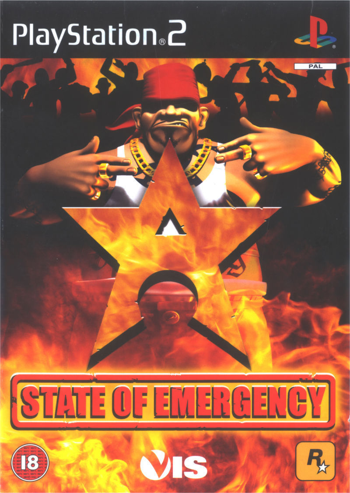
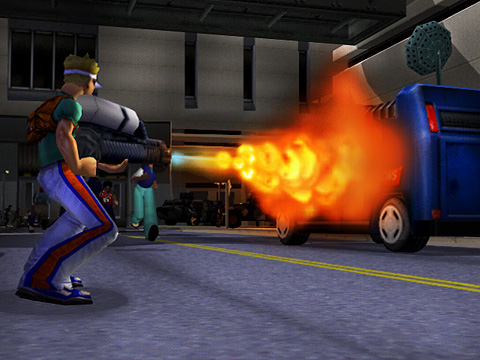
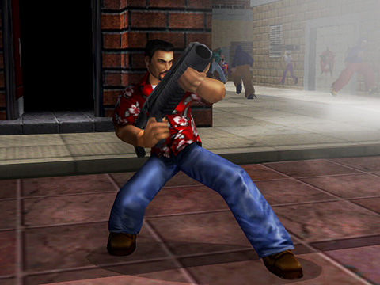
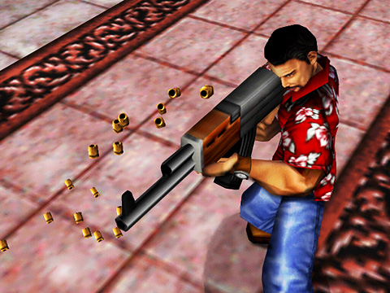
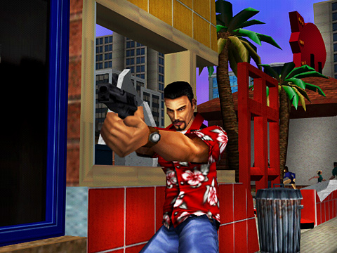

State of Emergency

Descripción
State of Emergency nos lleva a un futuro cercano en el que una poderosa corporación conocida como «La Corporación» ha tomado el control de la sociedad. Ante esta situación, la población se echa a las calles para rebelarse contra el régimen y luchar por su libertad.
El juego destaca por su acción desenfrenada y sus enormes disturbios urbanos, en los que tendremos que enfrentarnos a las fuerzas de seguridad utilizando todo tipo de armas y objetos del entorno.
Cuenta con dos modos principales: Revolución, que nos propone completar diferentes misiones, y Caos, donde nuestro objetivo será causar toda la destrucción posible antes de que se agote el tiempo. Una de sus características más llamativas es la gran cantidad de personajes que pueden aparecer en pantalla al mismo tiempo, creando auténticas batallas campales.
Capturas del videojuego




Información del videojuego
| Desarrollador | Plataforma | Fecha de lanzamiento |
|---|---|---|
| VIS Entertainment | PC, PS2, Xbox | 15 de febrero de 2002 |